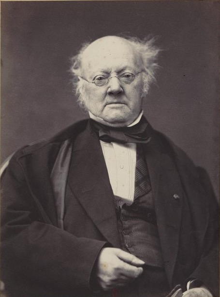
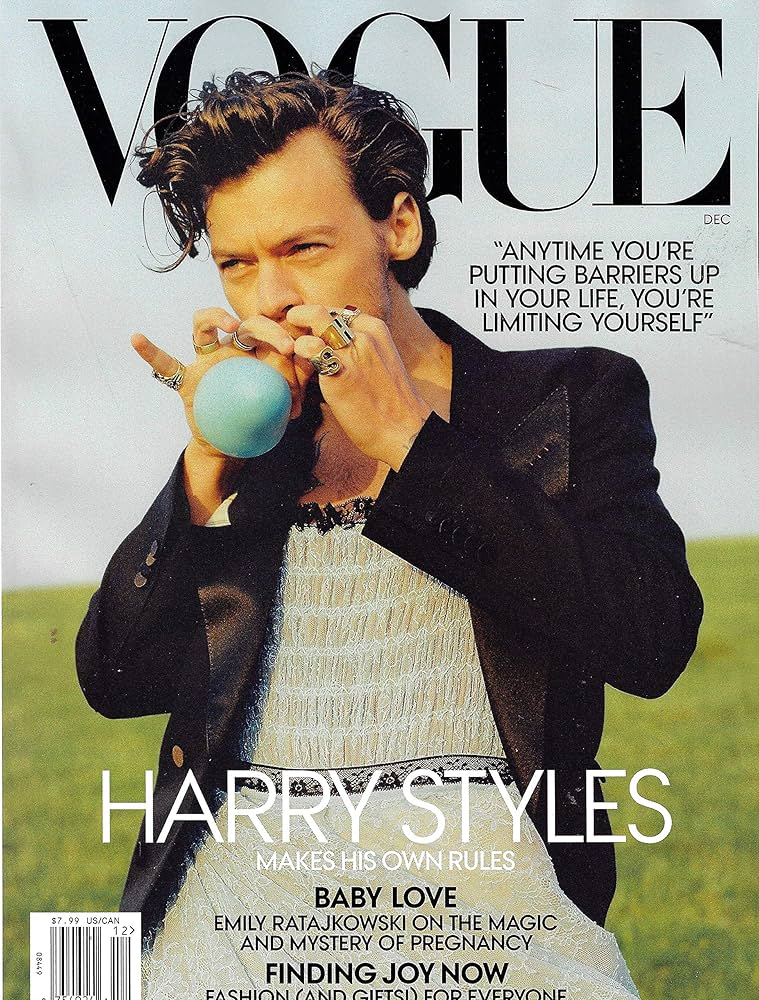
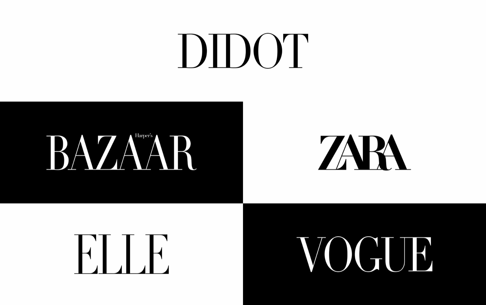

Didot
Designed by:
Firmin Didot

Foundry:
Didot Type Foundry
Country:
🇫🇷 France
Year:
c. 1784–1811 (developed over time)
Intent:
- Designed to express elegance, refinement, and rational order
- Reflect Enlightenment ideals of clarity and control
- Push typography toward extreme contrast and precision
- Intended for high-quality printing and display
What was happening at the time:
- The Enlightenment and rise of rationalism
- Neoclassicism influencing art, fashion, and architecture
- Pre- and post-French Revolution France
- A shift from old-style humanist type toward modern serif forms

Type classification:
- Serif
- Modern serif (Didone)
Characterised by:
- Extreme contrast between thick and thin strokes
- Hairline, unbracketed serifs
- Vertical stress
- Elegant, narrow proportions
- Feels luxurious, dramatic, and formal
Famous examples in use:

Why designers still use it:
- Instantly signals luxury and sophistication
- Strong visual impact in display sizes
- Closely associated with fashion and high culture
- Timeless elegance when used carefully
When NOT to use it:
- Long-form body text
- Small sizes or low-resolution screens
- Informal or friendly contexts
- Environments with poor printing quality
Usage:
Use Didot when you want elegance and authority — but only where precision and scale can support it.